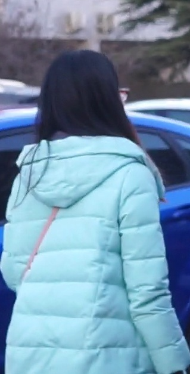
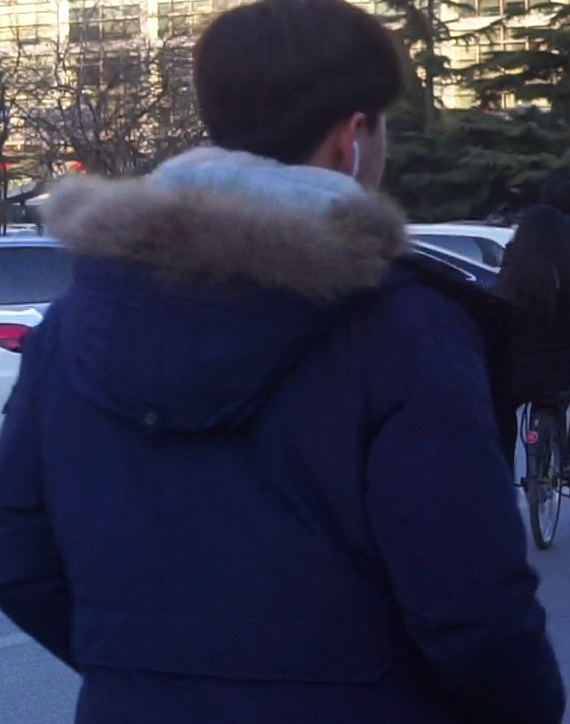
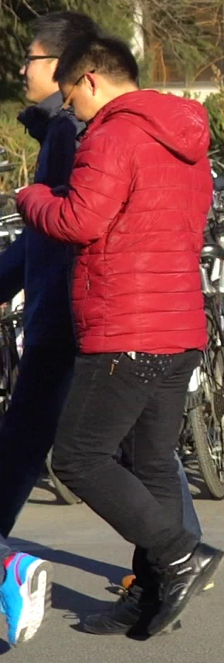
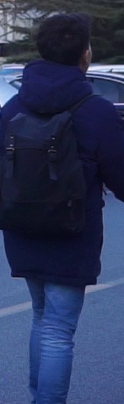
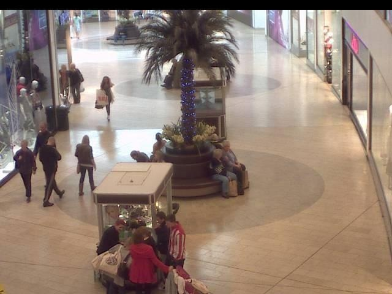
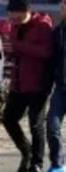
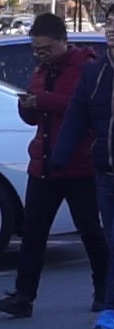
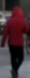

“A man wearing a red jacket, black trousers and black shoes.”
Gallery · 1,000 test photos




Embedded once, ahead of time, and cached as a 20,505 × 768 matrix.
Or · a live video

YOLO cuts each person out, and every crop becomes a "photo".
Encoder · 768-d output
EmbeddingGemma-2
text → vector
The sentence becomes word tokens. A SearchQuery prompt tells the model "this is a search".
image → vector
The photo is cut into patches and squeezed to 70 vision tokens: the fastest budget, and more accurate than 280 in our tests.
Both end as the same kind of list
[ 0.031, −0.012, 0.087, …, −0.044 ] · length 1
Same weights for both inputs. The fine-tuning pulls a description and the photos of its person towards the same point.
Shared space · cosine similarity
Every vector has length 1, so the score is just the angle: cos θ. A score of 1 means the same direction, and a score near 0 means unrelated.
Output (a) · ranked photos

.579✓

.559✓.537✓

.528✓.476✗
The top 4 are all the same man, seen by four different cameras.
Output (b) · the person, boxed live
best score ≥ 0.45everyone else
Query: “a man in a red and white striped shirt”. Mall dataset, frame 790. The next-best person scores 0.40.
Figure 1. The whole system is one idea used twice. A sentence and a photo of a person each become a list of 768 numbers, and matching numbers mean matching people. (a) For search, the sentence is compared with every photo in the gallery, and the photos are sorted by score. (b) For video, a detector first cuts every person out of the frame. Each cut-out is treated as a photo, and the best-scoring one gets the green box. All images are real outputs of the fine-tuned model.